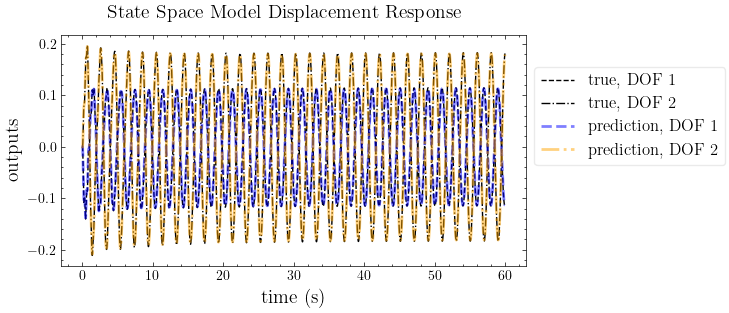

Introduction to MIMO#
[1]:
import mdof
from mdof import modal, transform
import sdof
import numpy as np
from numpy import linspace, sqrt, pi
from mdof.utilities.config import Config
from mdof.utilities.printing import *
from mdof.numerics import decimate
Unknown multi-input, multi-output system#
parameter |
value |
|---|---|
\(m_{1}\) |
mass at dof 1 |
\(m_{2}\) |
mass at dof 2 |
\(k_{1}\) |
stiffness at dof 1 |
\(k_{2}\) |
stiffness at dof 2 |
\(\omega_{1}\) |
natural periods for mode 1 |
\(\omega_{2}\) |
natural periods for mode 2 |
\(\zeta_{1}\) |
modal damping for mode 1 |
\(\zeta_{2}\) |
modal damping for mode 2 |

\[a = \frac{m_{1}}{m_{2}}, \quad{} b = \frac{k_{1}}{k_{2}}\]
\[\begin{split}\mathbf{M} = \begin{bmatrix} m_{1} & 0 \\ 0 & m_{2} \end{bmatrix} = m_{2}\begin{bmatrix} a & 0 \\ 0 & 1 \end{bmatrix}\end{split}\]
\[\begin{split}\mathbf{K} = \begin{bmatrix} k_{1}+k_{2} & -k_{2} \\ -k_{2} & k_{2} \end{bmatrix} = k_{2} \begin{bmatrix} 1+b & -1 \\ -1 & 1 \end{bmatrix}\end{split}\]
\[\begin{split}\mathbf{M}^{-1}\mathbf{K} = \frac{k_{2}}{am_{2}}\begin{bmatrix} 1+b & -1 \\ -a & a \end{bmatrix}\end{split}\]
\[(1+b-\lambda)(a-\lambda)+a = 0\]
\[\lambda^{2}+(-b-a{m}-1)\lambda+2a+ab = 0\]
\[\mathbf{M\ddot{u}} + \mathbf{Ku} = \mathbf{f(t)}\]
\[\mathbf{\ddot{u}} + \mathbf{M^{-1}Ku} = \mathbf{M^{-1}f(t)}\]
\[\mathbf{u} = \Phi \mathbf{q}, \hspace{1cm} \mathbf{M^{-1}K} = \Phi\Lambda\Phi^{-1}\]
\[\mathbf{\ddot{u}} + \Phi\Lambda\Phi^{-1}\mathbf{u} = \mathbf{M^{-1}f(t)}\]
\[\Phi^{-1}\mathbf{\ddot{u}} + \Phi^{-1}\Phi\Lambda\Phi^{-1}\mathbf{u} = \Phi^{-1}\mathbf{M^{-1}f(t)}\]
\[\mathbf{\ddot{q}} + \Lambda\mathbf{q} = \Phi^{-1}\mathbf{M^{-1}f(t)}\]
\[\mathbf{M\ddot{u}} + \mathbf{C\dot{u}} + \mathbf{Ku} = \mathbf{f(t)}\]
\[\mathbf{\ddot{u}} + \mathbf{M^{-1}C\dot{u}} + \mathbf{M^{-1}Ku} = \mathbf{M^{-1}f(t)}\]
\[\mathbf{u} = \Phi \mathbf{q}, \hspace{1cm} \mathbf{M^{-1}K} = \Phi\Lambda\Phi^{-1}\]
\[\mathbf{\ddot{u}} + \Phi\Lambda\Phi^{-1}\mathbf{u} = \mathbf{M^{-1}f(t)}\]
\[\Phi^{-1}\mathbf{\ddot{u}} + \Phi^{-1}\Phi\Lambda\Phi^{-1}\mathbf{u} = \Phi^{-1}\mathbf{M^{-1}f(t)}\]
\[\mathbf{\ddot{q}} + \Lambda\mathbf{q} = \Phi^{-1}\mathbf{M^{-1}f(t)}\]
[2]:
# get modal coordinates
def diag2dof(m1, m2, k1, k2):
m = m2
k = k2
a = m1/m2
b = k1/k2
kab1 = k*(a + b + 1)/(2*a*m)
ksqr = k*sqrt(a**2 - 2*a*b + 2*a + b**2 + 2*b + 1)/(2*a*m)
eigvals = np.array([kab1 - ksqr, kab1 + ksqr])
eigvecs = np.array([[1 - m*(kab1 - ksqr)/k, 1 - m*(kab1 + ksqr)/k],
[1, 1]])
return eigvals, eigvecs
# displacement response (analytical solution) (output)
def harmonic_sdof(forcing_frequencies, nt, t, k, omega_n, zeta):
omega_D = omega_n*np.sqrt(1-zeta**2)
output = np.zeros((len(forcing_frequencies),nt))
for i,omega in enumerate(forcing_frequencies):
C3 = (1/k)*(1-(omega/omega_n)**2)/((1-(omega/omega_n)**2)**2+(2*zeta*omega/omega_n))**2
C4 = -(2*zeta*omega/omega_n)*(1-(omega/omega_n)**2)/((1-(omega/omega_n)**2)**2+(2*zeta*omega/omega_n))**2
C1 = -C4
C2 = (zeta*omega_n*C1-omega*C3)/omega_D
output[i,:] = np.exp(-zeta*omega_n*t)*(C1*np.cos(omega_D*t)+C2*np.sin(omega_D*t)) + C3*np.sin(omega*t) + C4*np.cos(omega*t)
output = np.sum(output,axis=0)
return output
def harmonic_2dof(forcing_frequencies, nt, t, m1, m2, k1, k2, zeta1, zeta2):
ks = [k1, k2]
zs = [zeta1, zeta2]
omega_ns, phis = diag2dof(m1, m2, k1, k2)
outputs = np.empty((2,nt))
for i in range(2):
outputs[i] = harmonic_sdof(forcing_frequencies, nt, t, ks[i], omega_ns[i], zs[i])
outputs = phis@outputs
return omega_ns, phis, outputs
[3]:
# parameters of 2DOF system
m1 = 2 # mass
m2 = 1 # mass
ms = [m1, m2]
k1 = 30 # stiffness
k2 = 10 # stiffness
ks = [k1, k2]
zeta1 = 0.01 # damping ratio
zeta2 = 0.02 # damping ratio
zetas = [zeta1, zeta2]
omega_ns, phis = diag2dof(*ms, *ks)
C = phis @ np.diag([2*zeta*omega_n for zeta,omega_n in zip(zetas, omega_ns)]) # damping coefficients
Tns = [2*np.pi/omega_n for omega_n in omega_ns]
print(f"natural periods: {Tns[0]:<3.3}s, {Tns[1]:<3.3}s")
print(f"damping ratios: {zeta1}, {zeta2}")
print(f"damping matrix: {C}")
natural periods: 0.991s, 0.266s
damping ratios: 0.01, 0.02
damping matrix: [[ 0.04641016 -1.29282032]
[ 0.12679492 0.94641016]]
[4]:
# forcing function (input)
nt = 2000 # number of timesteps
dt = 0.03 # timestep
tf = nt*dt # final time
t = np.arange(start = 0, stop = tf, step = dt) # times
forcing_frequencies = [0.5*omega_ns[0]] # [0.017*omega_ns[0], 0.14*omega_ns[0], 0.467*omega_ns[0], 0.186*omega_ns[0], 0.2937*omega_ns[0]] # forcing frequencies (rad/s)
inputs = np.sum(np.sin([omega*t for omega in forcing_frequencies]), axis=0)
[5]:
# displacement response (output)
_, _, outputs = harmonic_2dof(forcing_frequencies, nt, t, *ms, *ks, *zetas)
[6]:
outputs
[6]:
array([[ 0. , 0.00043303, -0.00269271, ..., -0.11366602,
-0.11476349, -0.11481787],
[ 0. , -0.00064958, 0.00082355, ..., 0.17312782,
0.17786758, 0.18101654]])
[7]:
# plot input vs. output
plot_io(inputs=inputs, outputs=outputs, t=t, title="2DOF Displacement Response to Sinusoidal Forcing")

Configure#
Method#
[8]:
conf = Config()
conf.order = 4
conf.horizon = 1000
Analysis with System Identification#
Modal Estimation#
[9]:
# Set parameters
conf.damping = zetas[0]
conf.period_band = (0.1,3) # Period band (s)
conf.pseudo = False # use pseudo accelerations (Sa)
# A place to store models and their predictions
transfer_models = {}
# Generate a transfer function representation of the system
conf.decimation = 1
transfer_models["Fourier Transform"] = transform.fourier_transfer(inputs, outputs[0], dt, **conf)
# transfer_models["Response Spectrum"] = transform.response_transfer(inputs, outputs[0], dt, **conf)
# Determing the fundamental frequency
fourier_periods, fourier_amplitudes = modal.spectrum_modes(*transfer_models["Fourier Transform"])
# response_periods, response_amplitudes = modal.spectrum_modes(*transfer_models["Response Spectrum"],height=0.15)
# Generate a state space realization of the system
conf.decimation = 1
realization = mdof.system(method="srim", inputs=inputs, outputs=outputs, **conf)
# Obtain natural period and damping ratio from the state space model
ss_modes = modal.system_modes(realization, dt, **conf)
ss_periods = [1/f for f in [ss_modes[mode]["freq"] for mode in ss_modes.keys()]]
print(ss_periods)
print(ss_modes)
plot_transfer(transfer_models, title="Transfer Functions")
color_cycle = plt.rcParams['axes.prop_cycle'].by_key()['color']
plt.gcf().axes[0].vlines(ss_periods[:2],0,1,linestyles='--',colors='r',label='State Space')
# plt.gcf().axes[0].vlines([*fourier_periods[:2], *response_periods[:2]],ymin=0,ymax=1,linestyles='--',colors=[color_cycle[0],color_cycle[0],color_cycle[1],color_cycle[1]])
plt.gcf().axes[0].vlines([*fourier_periods[:2]],ymin=0,ymax=1,linestyles='--',colors=color_cycle[0])
for i in range(2):
plt.gcf().axes[0].text(fourier_periods[i]+0.05,0.975,r"$T_{fourier}$ = "+str(np.round(fourier_periods[i],3)),fontsize=15)
plt.gcf().axes[0].text(ss_periods[i]+0.05,0.5,r"$T_{state space}$ = "+str(np.round(ss_periods[i],3)),fontsize=15)
# plt.gcf().axes[0].text(response_periods[i]+0.05,0.875,r"$T_{response}$ = "+str(np.round(response_periods[i],3)),fontsize=15)
plt.gcf().set_figwidth(10)
plt.gcf().axes[0].legend()
plt.gcf().axes[0].set_ylim((0,1.1));
100%|█████████▉| 1000/1001 [00:00<00:00, 21888.43it/s]
[0.9910784035648112, 0.26555865787110455]
{'1': {'freq': 1.0090019078239407, 'damp': 0.009999999999990907, 'modeshape': array([-0.0105348 -0.01864933j, -0.02878162-0.05095092j]), 'cnd': 1.0000769609603322, 'energy_condensed_emaco': 0.9999999999996492, 'mpc': 1.0}, '3': {'freq': 3.765646384933059, 'damp': 0.019999999999517137, 'modeshape': array([ 0.07589302+0.11165162j, -0.05555755-0.08173466j]), 'cnd': 1.000259027125109, 'energy_condensed_emaco': 0.9999999999990133, 'mpc': 1.0}}

Response Prediction#
[10]:
# Reproduce the response with the state space model
from control import ss, forced_response
conf.horizon = 800
realization = mdof.system(method="srim", inputs=inputs, outputs=outputs, **conf)
out_pred = forced_response(ss(*realization,dt*conf.decimation), U=decimate(inputs,conf.decimation), squeeze=False, return_x=False).outputs
plot_pred(ytrue=decimate(outputs,conf.decimation), models=out_pred, t=decimate(t,conf.decimation), title="State Space Model Displacement Response")
100%|█████████▉| 1200/1201 [00:00<00:00, 22223.64it/s]

[ ]: